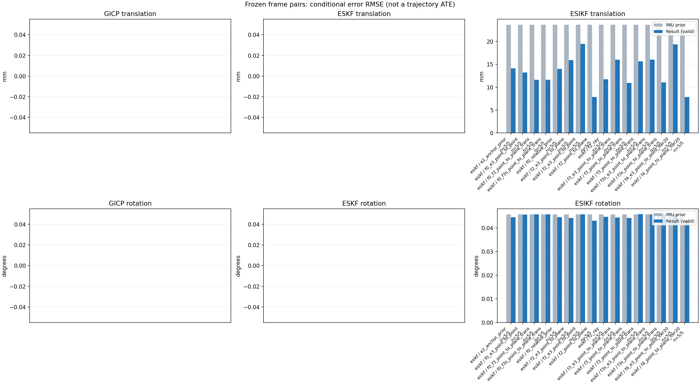

20261015_112845_yaw_left · depth=disparity_cache · cache=1545dcdb2154bcdc1d61
模型视差：/home/ubuntu22/slam/SIO_SLAM/models/tensorrt/disp_896x448_fp16.plan；engine SHA256=604cf6ac1f705c877260711730dd5d2d58c2a21f3020c03c668401ef7fb1e768。输入为生产裁剪与光照处理后的 RGB 0..255；此实验使用原始浮点像素视差，不应用完整前端的邻域视差后处理。
原始 ONNX SHA256：e9f49736a65d68d06681add463866b6defdf78fdd7f4f50f6cc941b682fdc0bc。
代价体图改写验证：ONNX Runtime 固定随机特征输入，最大绝对误差 0；该项检查图改写，完整模型精度仍需由录制数据评估。
配准代码版本：744ac2d993ae629b0cc44a3b1d995e04ab4fad48；观测生成版本：744ac2d993ae629b0cc44a3b1d995e04ab4fad48。
固定图像对与纯 IMU 先验；ESKF 回放固定 GICP 观测，ESIKF 直接读取点云。真值只用于此报告。
同时查看 converged 与 solver_status：上游默认 Stereo 在 max_iter / stopped_at_minimum 时也可能置 converged=true。valid 表示输入检查通过，不表示精度提升。欧氏 GICP 未提供独立的点距 RMSE，该列显示 NaN。
误差按每对图像的锚点计算，单位 m / degrees。此处 RMSE 不是全序列 ATE；末帧受同一锚点条件约束。NIS 与条件马氏距离是诊断量，少量相关图像对不能用于宣称协方差已校准。
全部指标 CSV · R / P 矩阵 CSV · Stereo 求解逐轮 CSV · ESIKF 逐轮轨迹 CSV · 末轮 H / R / K_pose 矩阵 CSV · 配置快照 · 矢量图
unflagged 排除纯惯性先验平移误差超过 50 mm 的图像对；whitened 为误差按协方差白化后的每自由度均值，协方差与实际误差相符时约为 1。prior_whitened 用真值误差只检验先验 P；NIS 为 ESIKF 首轮 rᵀ(P+R)⁻¹r，不用真值，检验的是 P+R 的总量，单靠它分不开 P 与 R，偏差、错误对应和线性化误差也会抬高它。观测方差超过先验方差 1e+04 倍的方向视为不可观，从 NIS 及其自由度中去掉（nis_dof）。一致时 nis_per_dof 均值约 1、nis_over_chi2_median 中位数约 1；帧对少且共享序列，超出 95% 分位的比例只作参考。每轮重新关联时首轮只走到观测的一部分，nis 会偏小；nis_final 用最后一轮线性化点的创新 r_v + e_j，应以它为准。
| stage | method | variant | valid | total | result_translation_rmse_m | result_rotation_rmse_deg | result_translation_median_m | result_rotation_median_deg | result_translation_rmse_unflagged_m | result_rotation_rmse_unflagged_deg | improved_translation | improved_rotation | posterior_whitened_by_P_rot_mean | posterior_whitened_by_P_trans_mean | prior_whitened_by_P_rot_mean | prior_whitened_by_P_trans_mean | nis_per_dof_mean | nis_over_chi2_median_median | nis_exceeds_chi2_95_fraction | nis_final_per_dof_mean | nis_final_over_chi2_median_median | nis_final_exceeds_chi2_95_fraction |
|---|---|---|---|---|---|---|---|---|---|---|---|---|---|---|---|---|---|---|---|---|---|---|
| esikf | esikf | e2_anchor_prior | 5 | 5 | 0.014096 | 0.044476 | 0.0073537 | 0.007504 | 0.014096 | 0.044476 | 2 | 3 | 96.165 | 505.32 | 46.331 | 8.0251 | 9.1765 | 6.5158 | 1 | 12.276 | 4.8127 | 0.8 |
| esikf | esikf | f0_e3_point_to_point | 5 | 5 | 0.013226 | 0.045624 | 0.0073494 | 0.0067284 | 0.013226 | 0.045624 | 2 | 2 | 29.665 | 6.2406 | 28.375 | 0.064391 | 0.049635 | 0.060336 | 0 | 0.1 | 0.081614 | 0 |
| esikf | esikf | f0_f3_point_to_plane_trans | 5 | 5 | 0.011628 | 0.045642 | 0.0071916 | 0.0067273 | 0.011628 | 0.045642 | 2 | 4 | 29.472 | 54.331 | 28.375 | 0.064391 | 0.76544 | 0.1173 | 0.2 | 0.6221 | 0.32791 | 0 |
| esikf | esikf | f0_f3s_point_to_plane_trans | 5 | 5 | 0.011607 | 0.045715 | 0.007027 | 0.0066984 | 0.011607 | 0.045715 | 2 | 0 | 28.375 | 54.322 | 28.375 | 0.064391 | 0.76544 | 0.1173 | 0.2 | 0.61292 | 0.32665 | 0 |
| esikf | esikf | f0_relative_prior | 5 | 5 | 0.014018 | 0.0445 | 0.0080081 | 0.0069809 | 0.014018 | 0.0445 | 2 | 2 | 45.534 | 466.18 | 28.375 | 0.064391 | 6.6913 | 4.2742 | 0.8 | 7.6126 | 3.8355 | 0.8 |
| esikf | esikf | f2_e3_point_to_plane | 5 | 5 | 0.015929 | 0.044164 | 0.004027 | 0.006726 | 0.015929 | 0.044164 | 2 | 2 | 64.345 | 7.5074 | 46.331 | 8.0251 | 0.93034 | 0.24 | 0.2 | 2.0558 | 0.44262 | 0.2 |
| esikf | esikf | f2_e3_point_to_point | 5 | 5 | 0.019457 | 0.045691 | 0.0041425 | 0.0067438 | 0.019457 | 0.045691 | 2 | 2 | 71.845 | 18.104 | 46.331 | 8.0251 | 0.20351 | 0.095402 | 0 | 0.79241 | 0.098092 | 0.2 |
| esikf | esikf | f2_point_to_plane | 5 | 5 | 0.0078585 | 0.043054 | 0.0012908 | 0.0070279 | 0.0078585 | 0.043054 | 2 | 3 | 76.276 | 26.951 | 46.331 | 8.0251 | 5.9788 | 4.8543 | 0.8 | 9.1018 | 4.8253 | 0.8 |
| esikf | esikf | f2_ray | 5 | 5 | 0.011725 | 0.044662 | 0.0062613 | 0.0076047 | 0.011725 | 0.044662 | 2 | 2 | 79.786 | 30.404 | 46.331 | 8.0251 | 4.2684 | 6.6528 | 0.6 | 8.7014 | 6.8452 | 0.8 |
| esikf | esikf | f3_e3_point_to_plane_trans | 5 | 5 | 0.016048 | 0.044345 | 0.0040771 | 0.0067362 | 0.016048 | 0.044345 | 3 | 2 | 64.588 | 7.4271 | 46.331 | 8.0251 | 1.3034 | 0.56403 | 0.2 | 2.5292 | 0.60542 | 0.2 |
| esikf | esikf | f3_point_to_plane_trans | 5 | 5 | 0.010927 | 0.044203 | 0.0050052 | 0.0071178 | 0.010927 | 0.044203 | 2 | 2 | 78.667 | 50.576 | 46.331 | 8.0251 | 12.015 | 13.398 | 0.8 | 15.455 | 16.645 | 0.8 |
| esikf | esikf | f3_point_to_point_trans | 5 | 5 | 0.015676 | 0.045758 | 0.0058067 | 0.0064543 | 0.015676 | 0.045758 | 1 | 3 | 83.361 | 898.62 | 46.331 | 8.0251 | 8.2393 | 3.3707 | 0.6 | 38.663 | 25.128 | 0.8 |
| esikf | esikf | f3s_e3_point_to_plane_trans | 5 | 5 | 0.016032 | 0.045715 | 0.004077 | 0.0066984 | 0.016032 | 0.045715 | 3 | 0 | 46.331 | 7.413 | 46.331 | 8.0251 | 1.3034 | 0.56403 | 0.2 | 2.5331 | 0.60506 | 0.2 |
| esikf | esikf | f3s_point_to_plane_trans | 5 | 5 | 0.011025 | 0.045715 | 0.0052015 | 0.0066984 | 0.011025 | 0.045715 | 2 | 0 | 46.331 | 51.505 | 46.331 | 8.0251 | 12.015 | 13.398 | 0.8 | 15.368 | 16.645 | 0.8 |
| esikf | esikf | f4_e3_point_to_point_iter20 | 5 | 5 | 0.019346 | 0.045692 | 0.0041425 | 0.0067438 | 0.019346 | 0.045692 | 2 | 2 | 71.858 | 17.856 | 46.331 | 8.0251 | 0.20351 | 0.095402 | 0 | 0.8302 | 0.098092 | 0.2 |
| esikf | esikf | f4_point_to_plane_iter20 | 5 | 5 | 0.0078585 | 0.043054 | 0.0012908 | 0.0070279 | 0.0078585 | 0.043054 | 2 | 3 | 76.276 | 26.951 | 46.331 | 8.0251 | 5.9788 | 4.8543 | 0.8 | 9.1018 | 4.8253 | 0.8 |

| stage | case | method | variant | status | solver_status | inliers | converged | covariance_convention | covariance_from_hessian | fitness | registration_rmse_m | prior_trans_error_m | result_trans_error_m | prior_rot_error_deg | result_rot_error_deg | prior_flagged | R_rot_trace_rad2 | R_pos_trace_m2 | nis_regularized | posterior_whitened_by_P_rot | posterior_whitened_by_P_trans | prior_whitened_by_P_rot | prior_whitened_by_P_trans | nis_per_dof | nis_dof | nis_final_per_dof | nis_final_dof |
|---|---|---|---|---|---|---|---|---|---|---|---|---|---|---|---|---|---|---|---|---|---|---|---|---|---|---|---|
| esikf | static_start | esikf | e2_anchor_prior | updated | converged | 23376 | 1 | 1 | 0 | 0 | 7.7541e-05 | 0.00077507 | 0.0034164 | 0.0030866 | 0 | 4.4451e-08 | 8.4842e-07 | nan | 2.8137 | 4.884 | 3.2872 | 0.021421 | 4.0551 | 6 | 4.2898 | 6 | |
| esikf | static_start | esikf | f0_relative_prior | updated | converged | 23390 | 1 | 1 | 0 | 0 | 7.7541e-05 | 0.0023012 | 0.0034164 | 0.002647 | 0 | 4.4311e-08 | 8.3971e-07 | nan | 2.1431 | 14.577 | 3.012 | 0.00078797 | 1.9698 | 6 | 3.4188 | 6 | |
| esikf | static_start | esikf | f2_point_to_plane | updated | converged | 23377 | 1 | 1 | 0 | 0 | 7.7541e-05 | 0.00028254 | 0.0034164 | 0.0033891 | 0 | 5.2345e-07 | 4.9297e-06 | nan | 3.3765 | 0.31498 | 3.2872 | 0.021421 | 4.3269 | 6 | 4.301 | 6 | |
| esikf | static_start | esikf | f2_ray | updated | converged | 23378 | 1 | 1 | 0 | 0 | 7.7541e-05 | 0.00040138 | 0.0034164 | 0.0034004 | 0 | 0.040219 | 4.1034e-05 | nan | 3.2647 | 0.66051 | 3.2872 | 0.021421 | 5.2468 | 3 | 5.3986 | 3 | |
| esikf | static_start | esikf | f3_point_to_point_trans | updated | converged | 23372 | 1 | 1 | 0 | 0 | 7.7541e-05 | 0.0017891 | 0.0034164 | 0.0034033 | 0 | 0.044619 | 8.576e-07 | nan | 3.2696 | 29.936 | 3.2872 | 0.021421 | 11.388 | 3 | 19.817 | 3 | |
| esikf | static_start | esikf | f3_point_to_plane_trans | updated | converged | 23376 | 1 | 1 | 0 | 0 | 7.7541e-05 | 0.00089331 | 0.0034164 | 0.0034116 | 0 | 0.52414 | 4.9379e-06 | nan | 3.2811 | 3.6214 | 3.2872 | 0.021421 | 12.247 | 3 | 13.127 | 3 | |
| esikf | static_start | esikf | f0_f3_point_to_plane_trans | updated_not_converged | max_iterations | 23368 | 0 | 1 | 0 | 0 | 7.7541e-05 | 0.0028516 | 0.0034164 | 0.0034089 | 0 | 0.52506 | 5.0198e-06 | nan | 3.0027 | 8.9797 | 3.012 | 0.00078797 | 3.1714 | 3 | 2.3238 | 3 | |
| esikf | static_start | esikf | f3s_point_to_plane_trans | updated | converged | 23376 | 1 | 1 | 0 | 0 | 7.7541e-05 | 0.00089331 | 0.0034164 | 0.0034164 | 0 | 0.52414 | 4.9379e-06 | nan | 3.2872 | 3.6214 | 3.2872 | 0.021421 | 12.247 | 3 | 13.127 | 3 | |
| esikf | static_start | esikf | f0_f3s_point_to_plane_trans | updated_not_converged | max_iterations | 23367 | 0 | 1 | 0 | 0 | 7.7541e-05 | 0.0028314 | 0.0034164 | 0.0034164 | 0 | 0.52505 | 5.0193e-06 | nan | 3.012 | 8.8453 | 3.012 | 0.00078797 | 3.1714 | 3 | 2.2928 | 3 | |
| esikf | static_start | esikf | f4_point_to_plane_iter20 | updated | converged | 23377 | 1 | 1 | 0 | 0 | 7.7541e-05 | 0.00028254 | 0.0034164 | 0.0033891 | 0 | 5.2345e-07 | 4.9297e-06 | nan | 3.3765 | 0.31498 | 3.2872 | 0.021421 | 4.3269 | 6 | 4.301 | 6 | |
| esikf | static_start | esikf | f2_e3_point_to_point | updated | converged | 23377 | 1 | 1 | 0 | 0 | 7.7541e-05 | 6.923e-05 | 0.0034164 | 0.0034244 | 0 | 4.9394e-06 | 7.0443e-05 | nan | 3.2964 | 0.017369 | 3.2872 | 0.021421 | 0.085036 | 6 | 0.085036 | 6 | |
| esikf | static_start | esikf | f0_e3_point_to_point | updated | converged | 23377 | 1 | 1 | 0 | 0 | 7.7541e-05 | 0.00031104 | 0.0034164 | 0.0034202 | 0 | 4.9392e-06 | 7.0438e-05 | nan | 3.0171 | 0.026495 | 3.012 | 0.00078797 | 0.070523 | 6 | 0.072747 | 6 | |
| esikf | static_start | esikf | f2_e3_point_to_plane | updated | converged | 23377 | 1 | 1 | 0 | 0 | 7.7541e-05 | 8.2139e-05 | 0.0034164 | 0.0034191 | 0 | 3.0596e-05 | 0.00017703 | nan | 3.2931 | 0.024077 | 3.2872 | 0.021421 | 0.077148 | 3 | 0.077148 | 3 | |
| esikf | static_start | esikf | f3_e3_point_to_plane_trans | updated | converged | 23377 | 1 | 1 | 0 | 0 | 7.7541e-05 | 8.5454e-05 | 0.0034164 | 0.0034163 | 0 | 0.52364 | 0.00017703 | nan | 3.2872 | 0.026078 | 3.2872 | 0.021421 | 0.42654 | 3 | 0.42654 | 3 | |
| esikf | static_start | esikf | f3s_e3_point_to_plane_trans | updated | converged | 23377 | 1 | 1 | 0 | 0 | 7.7541e-05 | 8.5454e-05 | 0.0034164 | 0.0034164 | 0 | 0.52364 | 0.00017703 | nan | 3.2872 | 0.026078 | 3.2872 | 0.021421 | 0.42654 | 3 | 0.42654 | 3 | |
| esikf | static_start | esikf | f4_e3_point_to_point_iter20 | updated | converged | 23377 | 1 | 1 | 0 | 0 | 7.7541e-05 | 6.923e-05 | 0.0034164 | 0.0034244 | 0 | 4.9394e-06 | 7.0443e-05 | nan | 3.2964 | 0.017369 | 3.2872 | 0.021421 | 0.085036 | 6 | 0.085036 | 6 | |
| esikf | sync_motion | esikf | e2_anchor_prior | updated | converged | 23332 | 1 | 1 | 0 | 0 | 0.00057298 | 0.0029991 | 0.010535 | 0.010275 | 0 | 4.7961e-08 | 8.666e-07 | nan | 29.909 | 70.795 | 25.745 | 0.61438 | 13.24 | 6 | 24.098 | 6 | |
| esikf | sync_motion | esikf | f0_relative_prior | updated | converged | 23350 | 1 | 1 | 0 | 0 | 0.00057298 | 0.0055335 | 0.010535 | 0.012893 | 0 | 4.759e-08 | 8.5045e-07 | nan | 39.546 | 155.08 | 24.164 | 0.0021178 | 3.8098 | 6 | 10.4 | 6 | |
| esikf | sync_motion | esikf | f2_point_to_plane | updated | converged | 23326 | 1 | 1 | 0 | 0 | 0.00057298 | 0.0012908 | 0.010535 | 0.010079 | 0 | 5.3442e-07 | 4.7602e-06 | nan | 24.425 | 5.7463 | 25.745 | 0.61438 | 13.684 | 6 | 13.147 | 6 | |
| esikf | sync_motion | esikf | f2_ray | updated | converged | 23333 | 1 | 1 | 0 | 0 | 0.00057298 | 0.00060691 | 0.010535 | 0.010663 | 0 | 0.008393 | 1.2835e-05 | nan | 27.228 | 0.89589 | 25.745 | 0.61438 | 7.2053 | 3 | 6.4399 | 3 | |
| esikf | sync_motion | esikf | f3_point_to_point_trans | updated | converged | 23352 | 1 | 1 | 0 | 0 | 0.00057298 | 0.0058067 | 0.010535 | 0.0099949 | 0 | 0.047559 | 8.5122e-07 | nan | 24.542 | 285.99 | 25.745 | 0.61438 | 25.763 | 3 | 126.58 | 3 | |
| esikf | sync_motion | esikf | f3_point_to_plane_trans | updated | converged | 23317 | 1 | 1 | 0 | 0 | 0.00057298 | 0.0017283 | 0.010535 | 0.010681 | 0 | 0.53543 | 4.7273e-06 | nan | 27.299 | 10.739 | 25.745 | 0.61438 | 30.042 | 3 | 27.167 | 3 | |
| esikf | sync_motion | esikf | f0_f3_point_to_plane_trans | updated_not_converged | max_iterations | 23383 | 0 | 1 | 0 | 0 | 0.00057298 | 0.0071916 | 0.010535 | 0.010507 | 0 | 0.53454 | 4.6089e-06 | nan | 24.169 | 31.726 | 24.164 | 0.0021178 | 0.52575 | 3 | 0.48702 | 3 | |
| esikf | sync_motion | esikf | f3s_point_to_plane_trans | updated | converged | 23317 | 1 | 1 | 0 | 0 | 0.00057298 | 0.0017288 | 0.010535 | 0.010535 | 0 | 0.53544 | 4.7272e-06 | nan | 25.745 | 10.743 | 25.745 | 0.61438 | 30.042 | 3 | 27.166 | 3 | |
| esikf | sync_motion | esikf | f0_f3s_point_to_plane_trans | updated_not_converged | max_iterations | 23386 | 0 | 1 | 0 | 0 | 0.00057298 | 0.007027 | 0.010535 | 0.010535 | 0 | 0.53254 | 4.6018e-06 | nan | 24.164 | 31.211 | 24.164 | 0.0021178 | 0.52575 | 3 | 0.47172 | 3 | |
| esikf | sync_motion | esikf | f4_point_to_plane_iter20 | updated | converged | 23326 | 1 | 1 | 0 | 0 | 0.00057298 | 0.0012908 | 0.010535 | 0.010079 | 0 | 5.3442e-07 | 4.7602e-06 | nan | 24.425 | 5.7463 | 25.745 | 0.61438 | 13.684 | 6 | 13.147 | 6 | |
| esikf | sync_motion | esikf | f2_e3_point_to_point | updated | converged | 23341 | 1 | 1 | 0 | 0 | 0.00057298 | 0.00057438 | 0.010535 | 0.010492 | 0 | 5.3199e-06 | 7.2008e-05 | nan | 25.635 | 0.62329 | 25.745 | 0.61438 | 0.44735 | 5 | 0.44735 | 5 | |
| esikf | sync_motion | esikf | f0_e3_point_to_point | updated | converged | 23363 | 1 | 1 | 0 | 0 | 0.00057298 | 0.0045041 | 0.010535 | 0.010543 | 0 | 5.3007e-06 | 7.1107e-05 | nan | 24.33 | 1.6711 | 24.164 | 0.0021178 | 0.089124 | 6 | 0.23426 | 6 | |
| esikf | sync_motion | esikf | f2_e3_point_to_plane | updated | converged | 23341 | 1 | 1 | 0 | 0 | 0.00057298 | 0.00057319 | 0.010535 | 0.010522 | 0 | 3.1246e-05 | 0.00017298 | nan | 25.716 | 0.62297 | 25.745 | 0.61438 | 0.60727 | 3 | 0.60727 | 3 | |
| esikf | sync_motion | esikf | f3_e3_point_to_plane_trans | updated | converged | 23341 | 1 | 1 | 0 | 0 | 0.00057298 | 0.00057209 | 0.010535 | 0.010541 | 0 | 0.53476 | 0.00017298 | nan | 25.807 | 0.62183 | 25.745 | 0.61438 | 1.1341 | 3 | 1.1341 | 3 | |
| esikf | sync_motion | esikf | f3s_e3_point_to_plane_trans | updated | converged | 23341 | 1 | 1 | 0 | 0 | 0.00057298 | 0.00057209 | 0.010535 | 0.010535 | 0 | 0.53476 | 0.00017298 | nan | 25.745 | 0.62183 | 25.745 | 0.61438 | 1.1341 | 3 | 1.1341 | 3 | |
| esikf | sync_motion | esikf | f4_e3_point_to_point_iter20 | updated | converged | 23341 | 1 | 1 | 0 | 0 | 0.00057298 | 0.00057438 | 0.010535 | 0.010492 | 0 | 5.3199e-06 | 7.2008e-05 | nan | 25.635 | 0.62329 | 25.745 | 0.61438 | 0.44735 | 5 | 0.44735 | 5 | |
| esikf | main_motion | esikf | e2_anchor_prior | updated | converged | 17577 | 1 | 1 | 0 | 0 | 0.0038957 | 0.0073537 | 0.0066984 | 0.007504 | 0 | 1.0574e-07 | 1.0582e-06 | nan | 20.048 | 156.46 | 11.869 | 2.2569 | 3.5036 | 6 | 3.9235 | 6 | |
| esikf | main_motion | esikf | f0_relative_prior | updated_not_converged | max_iterations | 17583 | 0 | 1 | 0 | 0 | 0.0038957 | 0.0080081 | 0.0066984 | 0.0069809 | 0 | 1.0561e-07 | 1.0513e-06 | nan | 9.8133 | 178.99 | 8.4888 | 0.011707 | 3.192 | 6 | 2.43 | 6 | |
| esikf | main_motion | esikf | f2_point_to_plane | updated | converged | 17575 | 1 | 1 | 0 | 0 | 0.0038957 | 0.0058029 | 0.0066984 | 0.0070279 | 0 | 7.9459e-07 | 4.1339e-06 | nan | 16.736 | 19.9 | 11.869 | 2.2569 | 2.2422 | 6 | 2.1862 | 6 | |
| esikf | main_motion | esikf | f2_ray | updated | converged | 17572 | 1 | 1 | 0 | 0 | 0.0038957 | 0.0062613 | 0.0066984 | 0.0076047 | 0 | 0.018029 | 1.6105e-05 | nan | 19.589 | 22.639 | 11.869 | 2.2569 | 7.2793 | 3 | 5.3171 | 3 | |
| esikf | main_motion | esikf | f3_point_to_point_trans | updated_not_converged | max_iterations | 17584 | 0 | 1 | 0 | 0 | 0.0038957 | 0.0053001 | 0.0066984 | 0.0064543 | 0 | 0.10503 | 1.0333e-06 | nan | 14.642 | 136.95 | 11.869 | 2.2569 | 1.2352 | 3 | 9.5582 | 3 | |
| esikf | main_motion | esikf | f3_point_to_plane_trans | updated | converged | 17570 | 1 | 1 | 0 | 0 | 0.0038957 | 0.0066599 | 0.0066984 | 0.0071178 | 0 | 0.79238 | 4.0874e-06 | nan | 17.09 | 27.563 | 11.869 | 2.2569 | 6.9787 | 3 | 6.8513 | 3 | |
| esikf | main_motion | esikf | f0_f3_point_to_plane_trans | updated_not_converged | max_iterations | 17597 | 0 | 1 | 0 | 0 | 0.0038957 | 0.0094579 | 0.0066984 | 0.0067273 | 0 | 0.78692 | 3.9876e-06 | nan | 8.9099 | 32.974 | 8.4888 | 0.011707 | 0.036556 | 3 | 0.036995 | 3 | |
| esikf | main_motion | esikf | f3s_point_to_plane_trans | updated | converged | 17571 | 1 | 1 | 0 | 0 | 0.0038957 | 0.0066438 | 0.0066984 | 0.0066984 | 0 | 0.79188 | 4.086e-06 | nan | 11.869 | 27.268 | 11.869 | 2.2569 | 6.9787 | 3 | 6.6613 | 3 | |
| esikf | main_motion | esikf | f0_f3s_point_to_plane_trans | updated_not_converged | max_iterations | 17595 | 0 | 1 | 0 | 0 | 0.0038957 | 0.0095619 | 0.0066984 | 0.0066984 | 0 | 0.78635 | 3.981e-06 | nan | 8.4888 | 33.697 | 8.4888 | 0.011707 | 0.036556 | 3 | 0.038326 | 3 | |
| esikf | main_motion | esikf | f4_point_to_plane_iter20 | updated | converged | 17575 | 1 | 1 | 0 | 0 | 0.0038957 | 0.0058029 | 0.0066984 | 0.0070279 | 0 | 7.9459e-07 | 4.1339e-06 | nan | 16.736 | 19.9 | 11.869 | 2.2569 | 2.2422 | 6 | 2.1862 | 6 | |
| esikf | main_motion | esikf | f2_e3_point_to_point | updated | converged | 17516 | 1 | 1 | 0 | 0 | 0.0038957 | 0.0041425 | 0.0066984 | 0.0067438 | 0 | 1.1921e-05 | 8.978e-05 | nan | 12.324 | 3.0719 | 11.869 | 2.2569 | 0.064237 | 4 | 0.082316 | 4 | |
| esikf | main_motion | esikf | f0_e3_point_to_point | updated_not_converged | max_iterations | 17580 | 0 | 1 | 0 | 0 | 0.0038957 | 0.0073494 | 0.0066984 | 0.0067284 | 0 | 1.1717e-05 | 8.7378e-05 | nan | 8.8987 | 1.9488 | 8.4888 | 0.011707 | 0.02109 | 5 | 0.032845 | 5 | |
| esikf | main_motion | esikf | f2_e3_point_to_plane | updated | converged | 17522 | 1 | 1 | 0 | 0 | 0.0038957 | 0.004027 | 0.0066984 | 0.006726 | 0 | 4.6923e-05 | 0.00015158 | nan | 12.276 | 2.6287 | 11.869 | 2.2569 | 0.18928 | 3 | 0.19832 | 3 | |
| esikf | main_motion | esikf | f3_e3_point_to_plane_trans | updated | converged | 17525 | 1 | 1 | 0 | 0 | 0.0038957 | 0.0040771 | 0.0066984 | 0.0067362 | 0 | 0.80258 | 0.00015201 | nan | 12.306 | 2.7225 | 11.869 | 2.2569 | 0.44483 | 3 | 0.47747 | 3 | |
| esikf | main_motion | esikf | f3s_e3_point_to_plane_trans | updated | converged | 17525 | 1 | 1 | 0 | 0 | 0.0038957 | 0.004077 | 0.0066984 | 0.0066984 | 0 | 0.80258 | 0.00015201 | nan | 11.869 | 2.7224 | 11.869 | 2.2569 | 0.44483 | 3 | 0.47719 | 3 | |
| esikf | main_motion | esikf | f4_e3_point_to_point_iter20 | updated | converged | 17516 | 1 | 1 | 0 | 0 | 0.0038957 | 0.0041425 | 0.0066984 | 0.0067438 | 0 | 1.1921e-05 | 8.978e-05 | nan | 12.324 | 3.0719 | 11.869 | 2.2569 | 0.064237 | 4 | 0.082316 | 4 | |
| esikf | main_motion_long | esikf | e2_anchor_prior | updated_not_converged | max_iterations | 13003 | 0 | 1 | 0 | 0 | 0.029128 | 0.024616 | 0.10128 | 0.09838 | 0 | 1.6108e-07 | 1.3552e-06 | nan | 412.3 | 1564.8 | 182.35 | 3.5845 | 5.8078 | 6 | 2.0638 | 6 | |
| esikf | main_motion_long | esikf | f0_relative_prior | updated_not_converged | max_iterations | 12994 | 0 | 1 | 0 | 0 | 0.029128 | 0.023971 | 0.10128 | 0.098234 | 0 | 1.5975e-07 | 1.3237e-06 | nan | 169.45 | 1310.9 | 101.28 | 0.018605 | 5.4707 | 6 | 1.4821 | 6 | |
| esikf | main_motion_long | esikf | f2_point_to_plane | updated | converged | 12992 | 1 | 1 | 0 | 0 | 0.029128 | 0.016522 | 0.10128 | 0.095245 | 0 | 1.136e-06 | 4.3974e-06 | nan | 323.61 | 108.54 | 182.35 | 3.5845 | 1.567 | 6 | 1.7412 | 6 | |
| esikf | main_motion_long | esikf | f2_ray | updated_not_converged | max_iterations | 12987 | 0 | 1 | 0 | 0 | 0.029128 | 0.024584 | 0.10128 | 0.098785 | 0 | 0.0098855 | 7.6912e-06 | nan | 336.56 | 110.6 | 182.35 | 3.5845 | 0.27352 | 3 | 0.44955 | 3 | |
| esikf | main_motion_long | esikf | f3_point_to_point_trans | updated_not_converged | max_iterations | 13033 | 0 | 1 | 0 | 0 | 0.029128 | 0.033592 | 0.10128 | 0.10138 | 0 | 0.15528 | 1.2617e-06 | nan | 360.04 | 3885.4 | 182.35 | 3.5845 | 0.15175 | 3 | 1.1952 | 3 | |
| esikf | main_motion_long | esikf | f3_point_to_plane_trans | updated_not_converged | max_iterations | 13013 | 0 | 1 | 0 | 0 | 0.029128 | 0.022888 | 0.10128 | 0.097782 | 0 | 1.1325 | 4.5419e-06 | nan | 333.47 | 193.44 | 182.35 | 3.5845 | 0.23918 | 3 | 0.73267 | 3 | |
| esikf | main_motion_long | esikf | f0_f3_point_to_plane_trans | updated | converged | 13024 | 1 | 1 | 0 | 0 | 0.029128 | 0.0226 | 0.10128 | 0.10113 | 0 | 1.1292 | 4.5131e-06 | nan | 106.52 | 186.81 | 101.28 | 0.018605 | 0.0010048 | 3 | 0.0040858 | 3 | |
| esikf | main_motion_long | esikf | f3s_point_to_plane_trans | updated_not_converged | max_iterations | 13026 | 0 | 1 | 0 | 0 | 0.029128 | 0.023081 | 0.10128 | 0.10128 | 0 | 1.1255 | 4.532e-06 | nan | 182.35 | 197.18 | 182.35 | 3.5845 | 0.23918 | 3 | 0.72377 | 3 | |
| esikf | main_motion_long | esikf | f0_f3s_point_to_plane_trans | updated | converged | 13024 | 1 | 1 | 0 | 0 | 0.029128 | 0.022562 | 0.10128 | 0.10128 | 0 | 1.1291 | 4.5172e-06 | nan | 101.28 | 186.95 | 101.28 | 0.018605 | 0.0010048 | 3 | 0.0041055 | 3 | |
| esikf | main_motion_long | esikf | f4_point_to_plane_iter20 | updated | converged | 12992 | 1 | 1 | 0 | 0 | 0.029128 | 0.016522 | 0.10128 | 0.095245 | 0 | 1.136e-06 | 4.3974e-06 | nan | 323.61 | 108.54 | 182.35 | 3.5845 | 1.567 | 6 | 1.7412 | 6 | |
| esikf | main_motion_long | esikf | f2_e3_point_to_point | updated | converged | 12999 | 1 | 1 | 0 | 0 | 0.029128 | 0.029401 | 0.10128 | 0.10121 | 0 | 1.8758e-05 | 0.00012374 | nan | 307.57 | 30.652 | 182.35 | 3.5845 | 0.058051 | 6 | 0.076593 | 6 | |
| esikf | main_motion_long | esikf | f0_e3_point_to_point | updated_not_converged | max_iterations | 12988 | 0 | 1 | 0 | 0 | 0.029128 | 0.024296 | 0.10128 | 0.10108 | 0 | 1.7201e-05 | 0.00010357 | nan | 107.11 | 23.177 | 101.28 | 0.018605 | 0.053781 | 6 | 0.013686 | 6 | |
| esikf | main_motion_long | esikf | f2_e3_point_to_plane | updated | converged | 12989 | 1 | 1 | 0 | 0 | 0.029128 | 0.02086 | 0.10128 | 0.097769 | 0 | 6.7066e-05 | 0.00016282 | nan | 270.88 | 7.1582 | 182.35 | 3.5845 | 0.09136 | 4 | 0.37144 | 4 | |
| esikf | main_motion_long | esikf | f3_e3_point_to_plane_trans | updated_not_converged | max_iterations | 13004 | 0 | 1 | 0 | 0 | 0.029128 | 0.02205 | 0.10128 | 0.098175 | 0 | 1.1476 | 0.00016349 | nan | 271.94 | 7.9242 | 182.35 | 3.5845 | 0.16436 | 3 | 0.44858 | 3 | |
| esikf | main_motion_long | esikf | f3s_e3_point_to_plane_trans | updated_not_converged | max_iterations | 13007 | 0 | 1 | 0 | 0 | 0.029128 | 0.021996 | 0.10128 | 0.10128 | 0 | 1.1455 | 0.00016355 | nan | 182.35 | 7.8634 | 182.35 | 3.5845 | 0.16436 | 3 | 0.4515 | 3 | |
| esikf | main_motion_long | esikf | f4_e3_point_to_point_iter20 | updated | converged | 12999 | 1 | 1 | 0 | 0 | 0.029128 | 0.029401 | 0.10128 | 0.10121 | 0 | 1.8758e-05 | 0.00012374 | nan | 307.57 | 30.652 | 182.35 | 3.5845 | 0.058051 | 6 | 0.076593 | 6 | |
| esikf | static_end | esikf | e2_anchor_prior | updated_not_converged | max_iterations | 9109 | 0 | 1 | 0 | 0 | 0.044046 | 0.017998 | 0.0049366 | 0.0063656 | 0 | 1.6442e-07 | 1.0561e-06 | nan | 15.757 | 729.63 | 8.4021 | 33.648 | 19.276 | 6 | 27.005 | 6 | |
| esikf | static_end | esikf | f0_relative_prior | updated_not_converged | max_iterations | 9113 | 0 | 1 | 0 | 0 | 0.044046 | 0.017545 | 0.0049366 | 0.0054137 | 0 | 1.6394e-07 | 1.052e-06 | nan | 6.7162 | 671.36 | 4.9372 | 0.28874 | 19.014 | 6 | 20.332 | 6 | |
| esikf | static_end | esikf | f2_point_to_plane | updated | converged | 8738 | 1 | 1 | 0 | 0 | 0.044046 | 0.00062225 | 0.0049366 | 0.005865 | 0 | 1.0531e-06 | 3.822e-06 | nan | 13.238 | 0.25321 | 8.4021 | 33.648 | 8.074 | 6 | 24.133 | 6 | |
| esikf | static_end | esikf | f2_ray | updated_not_converged | max_iterations | 8981 | 0 | 1 | 0 | 0 | 0.044046 | 0.0065747 | 0.0049366 | 0.0056481 | 0 | 0.0078889 | 9.5795e-06 | nan | 12.291 | 17.226 | 8.4021 | 33.648 | 1.3369 | 3 | 25.902 | 3 | |
| esikf | static_end | esikf | f3_point_to_point_trans | updated_not_converged | max_iterations | 9065 | 0 | 1 | 0 | 0 | 0.044046 | 0.0059351 | 0.0049366 | 0.0060878 | 0 | 0.14339 | 8.2247e-07 | nan | 14.316 | 154.86 | 8.4021 | 33.648 | 2.6584 | 3 | 36.17 | 3 | |
| esikf | static_end | esikf | f3_point_to_plane_trans | updated_not_converged | max_iterations | 8840 | 0 | 1 | 0 | 0 | 0.044046 | 0.0050052 | 0.0049366 | 0.0056228 | 0 | 1.0004 | 3.5074e-06 | nan | 12.195 | 17.515 | 8.4021 | 33.648 | 10.567 | 3 | 29.399 | 3 | |
| esikf | static_end | esikf | f0_f3_point_to_plane_trans | updated_not_converged | max_iterations | 8793 | 0 | 1 | 0 | 0 | 0.044046 | 0.0040006 | 0.0049366 | 0.0045743 | 0 | 1.0322 | 3.6881e-06 | nan | 4.7651 | 11.163 | 4.9372 | 0.28874 | 0.09251 | 3 | 0.25861 | 3 | |
| esikf | static_end | esikf | f3s_point_to_plane_trans | updated_not_converged | max_iterations | 8857 | 0 | 1 | 0 | 0 | 0.044046 | 0.0052015 | 0.0049366 | 0.0049366 | 0 | 0.99659 | 3.504e-06 | nan | 8.4021 | 18.71 | 8.4021 | 33.648 | 10.567 | 3 | 29.162 | 3 | |
| esikf | static_end | esikf | f0_f3s_point_to_plane_trans | updated | converged | 8797 | 1 | 1 | 0 | 0 | 0.044046 | 0.0039705 | 0.0049366 | 0.0049366 | 0 | 1.0306 | 3.6839e-06 | nan | 4.9372 | 10.901 | 4.9372 | 0.28874 | 0.09251 | 3 | 0.25762 | 3 | |
| esikf | static_end | esikf | f4_point_to_plane_iter20 | updated | converged | 8738 | 1 | 1 | 0 | 0 | 0.044046 | 0.00062225 | 0.0049366 | 0.005865 | 0 | 1.0531e-06 | 3.822e-06 | nan | 13.238 | 0.25321 | 8.4021 | 33.648 | 8.074 | 6 | 24.133 | 6 | |
| esikf | static_end | esikf | f2_e3_point_to_point | updated_not_converged | max_iterations | 9220 | 0 | 1 | 0 | 0 | 0.044046 | 0.031794 | 0.0049366 | 0.005342 | 0 | 1.8543e-05 | 9.1348e-05 | nan | 10.394 | 56.155 | 8.4021 | 33.648 | 0.36289 | 4 | 3.2707 | 4 | |
| esikf | static_end | esikf | f0_e3_point_to_point | updated_not_converged | max_iterations | 9108 | 0 | 1 | 0 | 0 | 0.044046 | 0.014489 | 0.0049366 | 0.0046878 | 0 | 1.794e-05 | 8.5528e-05 | nan | 4.9747 | 4.3795 | 4.9372 | 0.28874 | 0.013656 | 4 | 0.14649 | 4 | |
| esikf | static_end | esikf | f2_e3_point_to_plane | updated | converged | 9251 | 1 | 1 | 0 | 0 | 0.044046 | 0.028583 | 0.0049366 | 0.0051057 | 0 | 5.7777e-05 | 0.00012642 | nan | 9.566 | 27.103 | 8.4021 | 33.648 | 3.6866 | 3 | 9.0248 | 3 | |
| esikf | static_end | esikf | f3_e3_point_to_plane_trans | updated | converged | 9251 | 1 | 1 | 0 | 0 | 0.044046 | 0.028009 | 0.0049366 | 0.005114 | 0 | 0.98726 | 0.00012666 | nan | 9.599 | 25.841 | 8.4021 | 33.648 | 4.3471 | 3 | 10.159 | 3 | |
| esikf | static_end | esikf | f3s_e3_point_to_plane_trans | updated | converged | 9251 | 1 | 1 | 0 | 0 | 0.044046 | 0.028006 | 0.0049366 | 0.0049366 | 0 | 0.98588 | 0.00012655 | nan | 8.4021 | 25.831 | 8.4021 | 33.648 | 4.3471 | 3 | 10.176 | 3 | |
| esikf | static_end | esikf | f4_e3_point_to_point_iter20 | updated | converged | 9224 | 1 | 1 | 0 | 0 | 0.044046 | 0.031456 | 0.0049366 | 0.0053582 | 0 | 1.849e-05 | 9.0801e-05 | nan | 10.459 | 54.914 | 8.4021 | 33.648 | 0.36289 | 4 | 3.4597 | 4 |